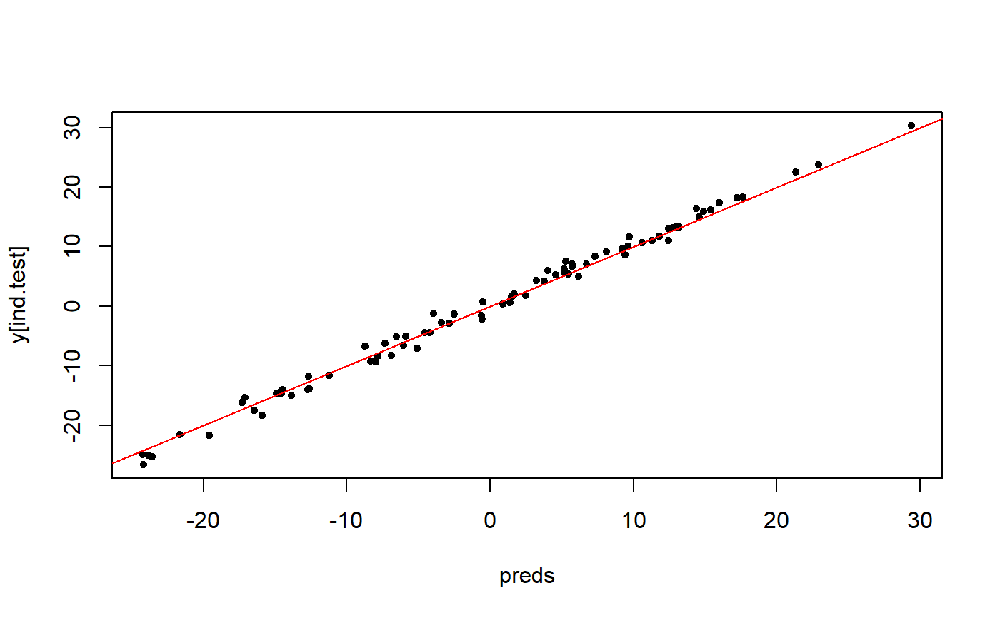

big_spLinReg.RdFit lasso penalized linear regression path for a Filebacked Big Matrix. Covariates can be added to correct for confounders.
big_spLinReg(X, y.train, ind.train = rows_along(X), ind.col = cols_along(X), covar.train = NULL, ncores = 1, ...)
| X | A FBM. |
|---|---|
| y.train | Vector of responses, corresponding to |
| ind.train | An optional vector of the row indices that are used, for the training part. If not specified, all rows are used. Don't use negative indices. |
| ind.col | An optional vector of the column indices that are used. If not specified, all columns are used. Don't use negative indices. |
| covar.train | Matrix of covariables to be added in each model to correct
for confounders (e.g. the scores of PCA), corresponding to |
| ncores | Number of cores used. Default doesn't use parallelism. You may use nb_cores. |
| ... | Arguments passed on to
|
Return an object of class big_sp_best_list (a list of K elements),
which has a method predict that can compute K vectors of predictions,
which could be combined with e.g. rowMeans. See details.
This is a modified version of one function of
package biglasso.
It adds the possibility to train models with covariables and use many
types of FBM (not only double ones).
Yet, it only corresponds to screen = "SSR" (Sequential Strong Rules).
Also, to remove the choice of the lambda parameter, we introduce the Cross-Model Selection and Averaging (CMSA) procedure:
This function separates the training set in K folds (e.g. 10).
In turn,
each fold is considered as an inner validation set and the others (K - 1) folds form an inner training set,
the model is trained on the inner training set and the corresponding predictions (scores) for the inner validation set are computed,
the vector of scores which maximizes log-likelihood is determined,
the vector of coefficients corresponding to the previous vector of scores is chosen.
The K resulting vectors of coefficients can then be combined into one
vector (see get_beta) or you can just combine the predictions
(e.g. using predict followed by rowMeans).
Tibshirani, R., Bien, J., Friedman, J., Hastie, T., Simon, N., Taylor, J. and Tibshirani, R. J. (2012), Strong rules for discarding predictors in lasso-type problems. Journal of the Royal Statistical Society: Series B (Statistical Methodology), 74: 245–266. https://doi.org/10.1111/j.1467-9868.2011.01004.x.
Zeng, Y., and Breheny, P. (2016). The biglasso Package: A Memory- and Computation-Efficient Solver for Lasso Model Fitting with Big Data in R. arXiv preprint arXiv:1701.05936. https://arxiv.org/abs/1701.05936.
set.seed(1) # simulating some data N <- 230 M <- 730 X <- FBM(N, M, init = rnorm(N * M, sd = 5)) y <- rowSums(X[, 1:5]) + rnorm(N) covar <- matrix(rnorm(N * 3), N) ind.train <- sort(sample(nrow(X), 150)) ind.test <- setdiff(rows_along(X), ind.train) test <- big_spLinReg(X, y[ind.train], ind.train = ind.train, covar.train = covar[ind.train, ], warn = FALSE) # K = 10 predictions str(preds <- predict(test, X, ind.row = ind.test, covar.row = covar[ind.test, ]))#> num [1:80, 1:10] 0.645 3.773 -13.639 -15.03 9.483 ... #> - attr(*, "dimnames")=List of 2 #> ..$ : chr [1:80] "4" "5" "6" "7" ... #> ..$ : NULL# Combine them preds2 <- rowMeans(preds) plot(preds2, y[ind.test], pch = 20); abline(0, 1, col = "red")